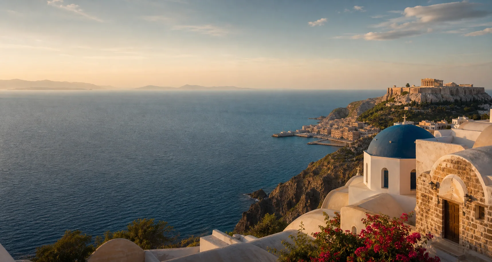
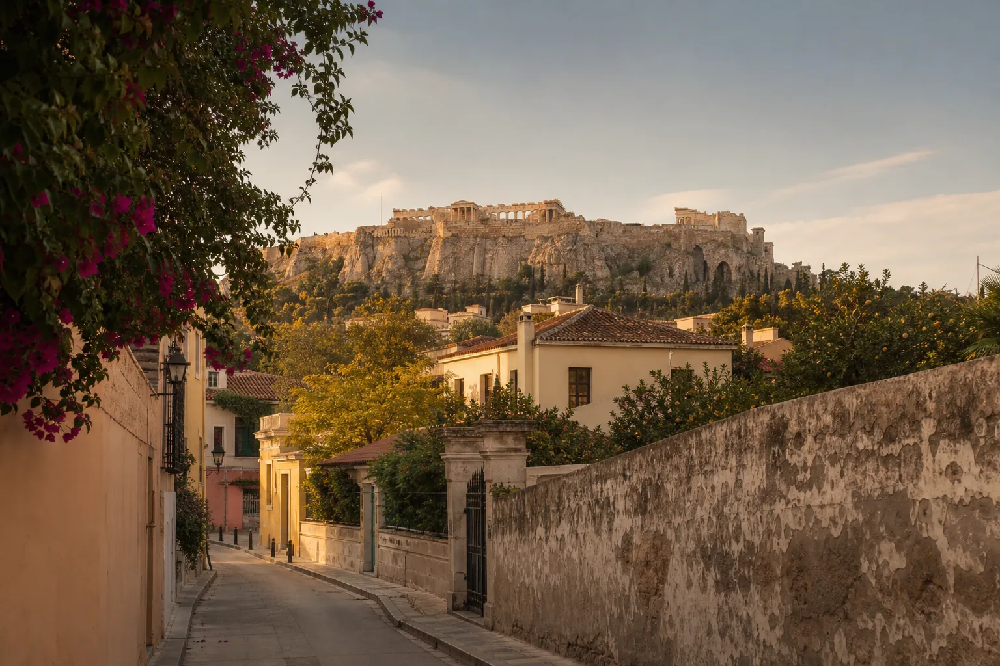
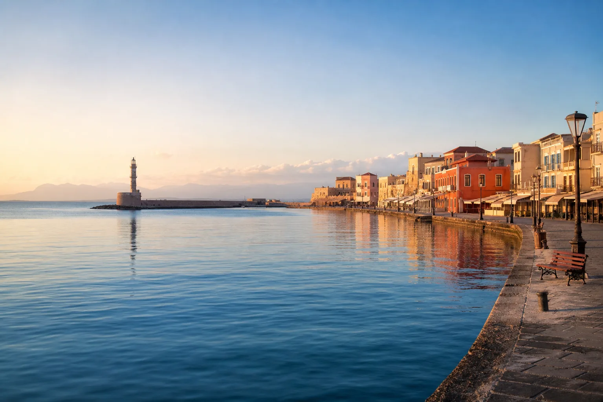
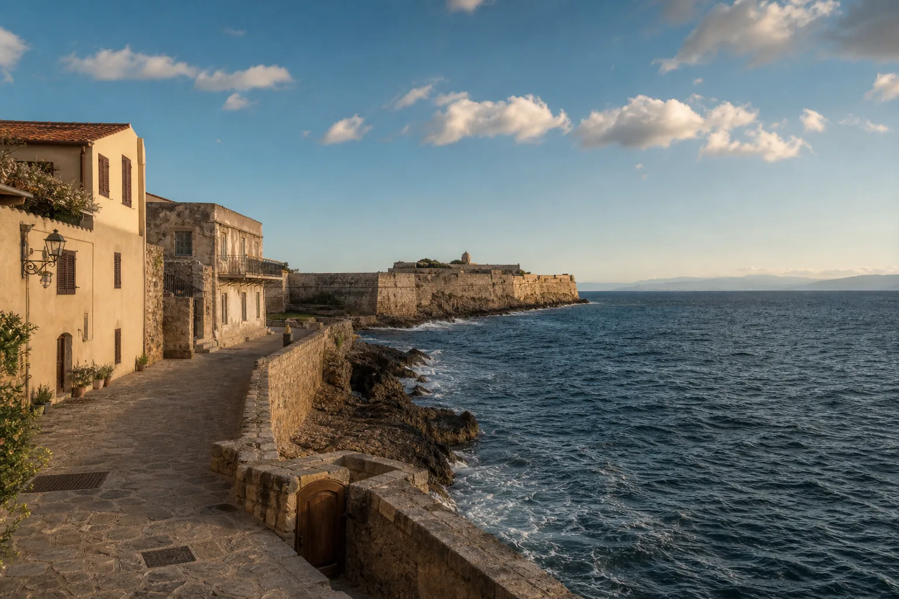
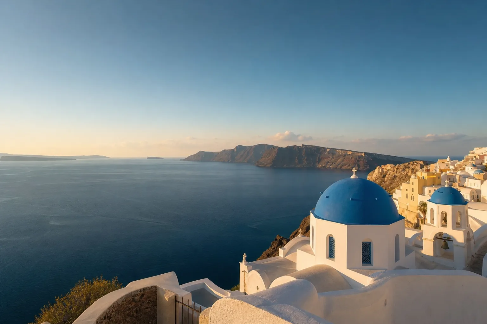
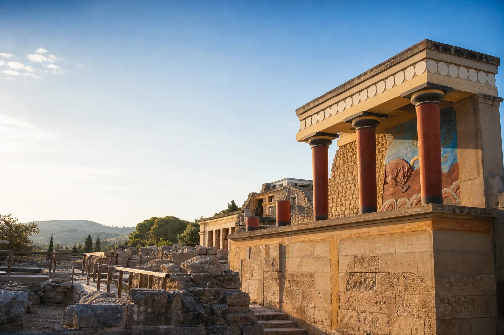
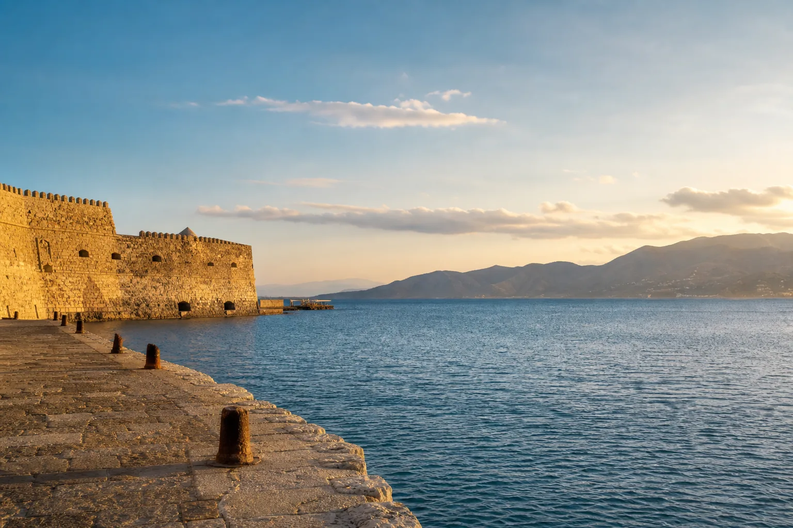

Athens
10–11 Oct · ancient city opener
Cousin trip / 10 - 17 October 2026
An eight-day route from ancient Athens to the Venetian coast of Crete, with a carefully planned day above the Santorini caldera.

The shape of the journey
The route is deliberately directional: sleep through the crossing to Crete, start in the west, then finish beside Heraklion’s port and airport.
10–11 Oct · ancient city opener
12–13 Oct · west Crete coast
14 Oct · Venetian stopover
14–17 Oct · the easy finish
15 Oct · high-speed day trip
The daily guide
From the first Athenian sunset to the last morning beside the Cretan sea, every day moves the journey forward.

Settle into the ancient city, then follow the light from the Agora to a hilltop sunset.
Explore the Day →
Walk through classical Athens before the overnight ferry carries the story south to Crete.
Explore the Day →
Step off the ferry into Venetian colour, sea air and a deliberately slow first island day.
Explore the Day →
Cross the western mountains for luminous water, pink-tinted sand and a taverna on the road home.
Explore the Day →
Move east through a Venetian interlude and arrive at the island hub before golden hour.
Explore the Day →
Cross the sea for blue domes, caldera paths and lunch above the volcano.
Explore the Day →
Enter the world of the Minotaur, share one last lunch, then let the pace soften.
Explore the Day →
Coffee, one final choice and enough time to reach the airport without sprinting.
Explore the Day →Travel design
Stay together, move once, and leave room for the good surprises. The route protects the trip from rushed travel days.
Plaka or Koukaki in Athens; Old Town or Stalos in Chania; Lions Square or the port in Heraklion.
Book a private three-berth cabin for Piraeus to Souda. It turns a transfer into a proper night’s sleep.
Windy Elafonisi? Switch to Falassarna or a winery. Rough sea to Santorini? Do Knossos, a winery and Agios Nikolaos.
Trip control
Lock the pieces that shape everything else. Tick items off as they’re done—your progress stays on this device.